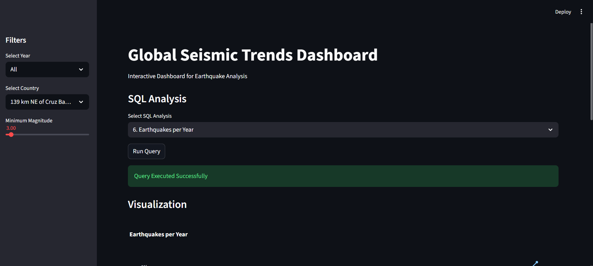
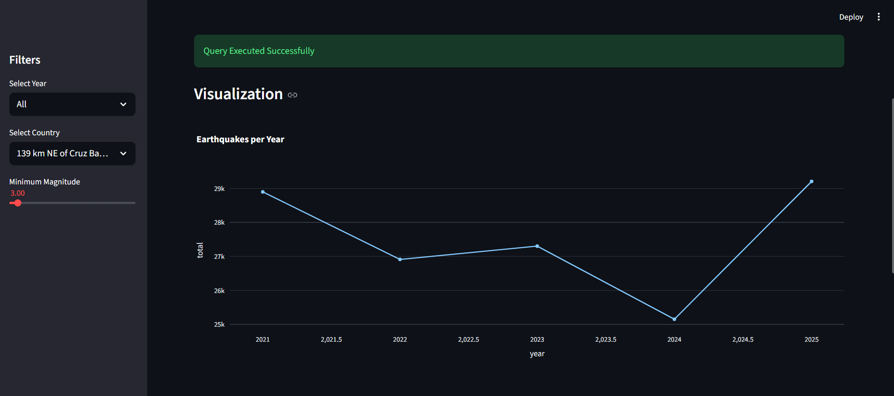
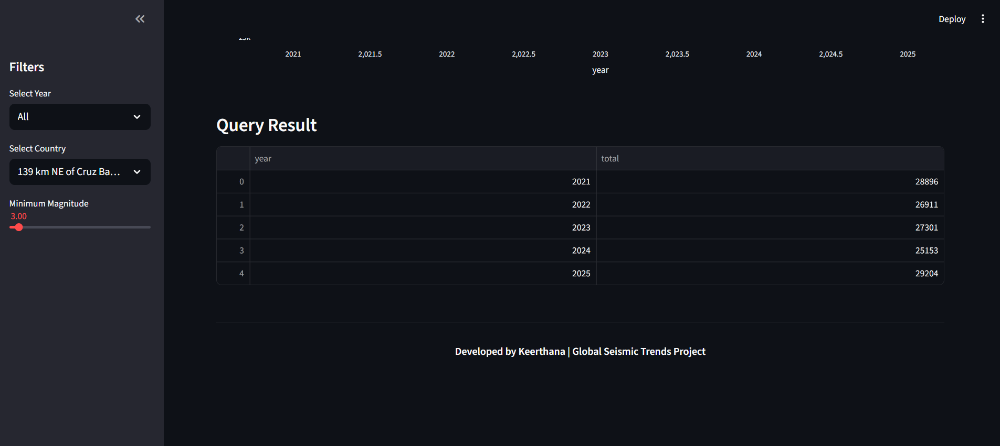

DATA ANALYTICS · SQL
Global Seismic Trends
An end-to-end earthquake data analysis project using USGS earthquake data, Python and MySQL to explore seismic patterns, magnitude, depth, geographical distribution and temporal trends.
01 · OVERVIEW
From earthquake data to structured insights.
Global Seismic Trends is an end-to-end data analytics project built around earthquake event data collected from the USGS Earthquake API.
The project covers the complete workflow from data collection and preprocessing to feature engineering, MySQL storage and SQL-based analysis.
02 · PROBLEM STATEMENT
What can earthquake data tell us?
The objective of this project is to analyze earthquake events and identify patterns related to magnitude, depth, location, time, tsunami activity and other earthquake characteristics.
Magnitude
Identify and compare high-magnitude earthquake events.
Depth
Analyze shallow, intermediate and deep earthquake events.
Geography
Explore earthquake distribution across countries and regions.
Time
Analyze earthquake frequency across years, months and days.
03 · DATA COLLECTION
USGS Earthquake API
Earthquake records were collected programmatically from the USGS Earthquake API. The collection process was performed month-by-month from 2021 through 2025.
04 · DATA CLEANING
Preparing the raw dataset
The raw earthquake dataset was processed using Python and Pandas before analytical processing.
Datetime Processing
Converted time and updated fields into datetime format.
Missing Values
Checked missing values and handled selected fields such as alert and timezone information.
Location Processing
Extracted country information from earthquake place descriptions.
Validation
Checked the final columns and dataset shape before saving the processed data.
05 · FEATURE ENGINEERING
Creating analytical features
Additional features were created to make the earthquake data easier to analyze.
06 · MYSQL
Structured data storage
The cleaned dataset was loaded into MySQL for structured querying and analytical processing.
07 · SQL ANALYSIS
30 SQL analyses
SQL was used to explore earthquake magnitude, depth, geography, temporal patterns, tsunami activity and data-quality indicators.
Earthquake Characteristics
- Top 10 strongest earthquakes
- Top 10 deepest earthquakes
- High magnitude shallow earthquakes
- Average magnitude by magType
- Average magnitude by depth category
- Deep earthquakes above 300 km
- Strong earthquake percentage
Geographic Analysis
- Average depth by country
- Top countries by average magnitude
- Top countries by frequency and magnitude
- Equatorial region analysis
- Shallow vs deep ratio by country
Temporal Analysis
- Earthquakes per year
- Earthquakes per month
- Earthquakes by day of week
- Year-over-year growth
- Close-time earthquakes
Tsunami & Alerts
- Tsunami events per year
- Alert levels
- Tsunami vs average magnitude
- Status distribution
- Earthquake type distribution
Data Quality & Networks
- Top earthquake networks
- Data quality indicators
- Average RMS and GAP by country
- High station-count events
- Poor quality signals
Comparative Analysis
- Countries with shallow and deep earthquakes in the same month
- Magnitude by depth category
08 · KEY INSIGHTS
What the analysis explores
Magnitude Patterns
Identified and compared the strongest earthquake events and examined magnitude across different categories.
Depth Patterns
Compared shallow, intermediate and deep earthquake activity across geographical areas.
Temporal Trends
Examined earthquake frequency by year, month, day of week and year-over-year change.
Tsunami & Alerts
Analyzed tsunami-associated events and alert-level distributions.
Geographic Patterns
Compared earthquake frequency, average depth and magnitude across countries.
Data Quality
Examined RMS, GAP, station counts and other signals related to earthquake data quality.
The project contains the SQL queries required to generate the underlying results. Exact numerical findings can be added here once the final query outputs are available.
10 · STREAMLIT DASHBOARD
Interactive Earthquake Dashboard
A Streamlit dashboard was developed to explore earthquake data interactively using filters, SQL analysis and visualizations.



10 · TECHNOLOGIES
Tools used
11 · PROJECT
Explore the project
Source code and project documentation can be added here.